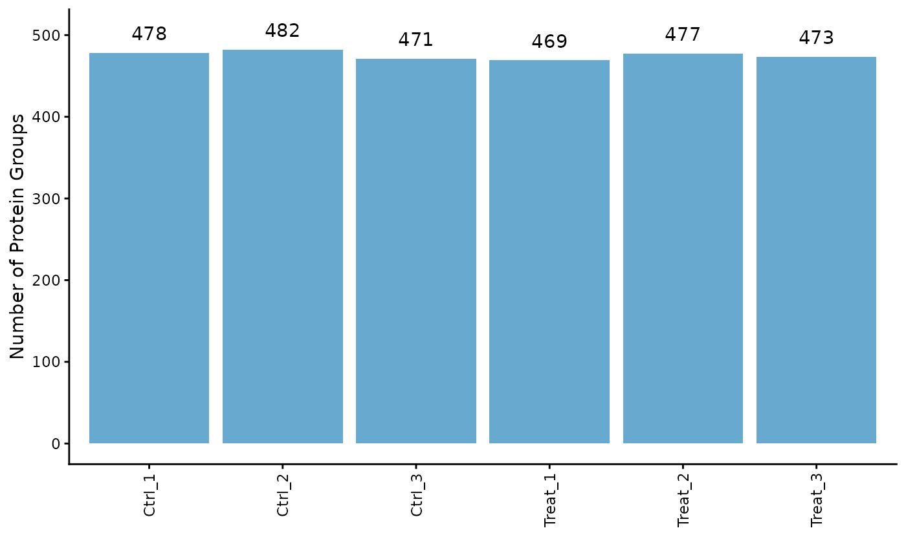
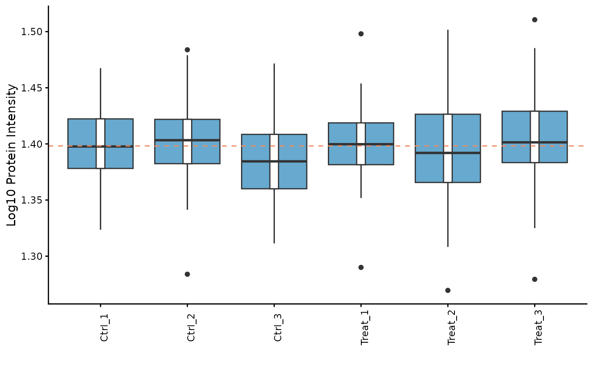
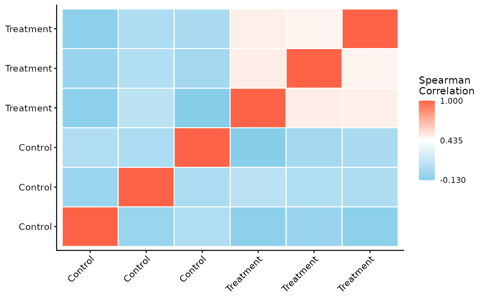
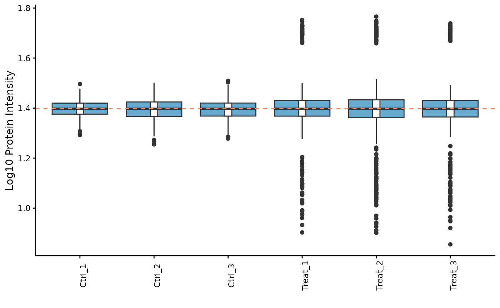
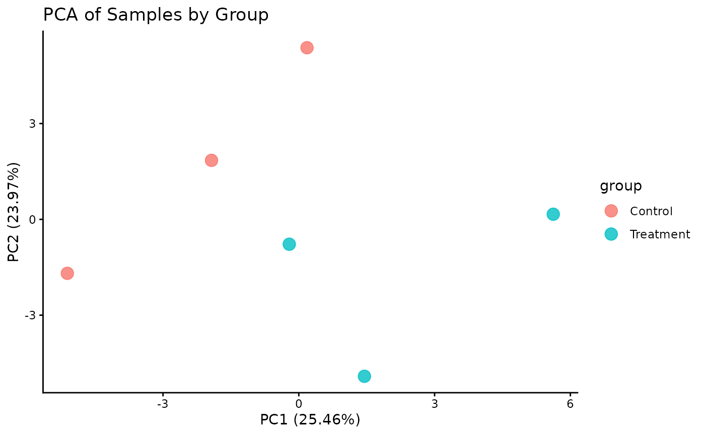
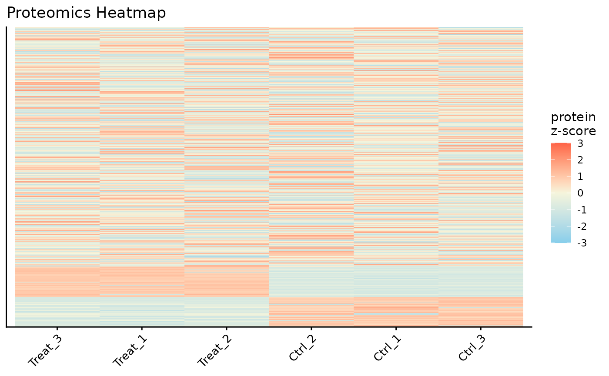
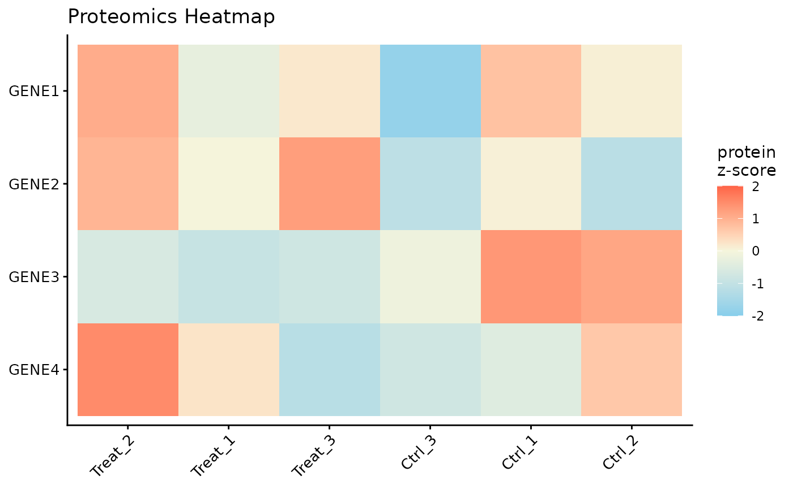

getting-started
getting-started.RmdIntroduction
The ProtPipe package provides a streamlined,
start-to-finish workflow for common proteomics data analysis tasks. It
is built around a central ProtData object, which stores
quantitative data, protein metadata, and sample metadata in a single,
cohesive unit. This vignette will walk you through a typical analysis,
from data loading to quality control and visualization.
Setup and Data Loading
First, we load the ProtPipe package.
Our analysis begins with two primary data frames:
- A
data.framecontaining protein metadata and quantitative intensity data for each sample. - A
data.framecontaining the experimental design, mapping each sample to its condition.
# 1. Create a sample raw data frame
# 1. Create a more realistic sample raw data frame
# We will simulate 50 genes in total:
# - 40 genes that are stable (no change between conditions)
# - 5 genes that are up-regulated in the Treatment group
# - 5 genes that are down-regulated in the Treatment group
n_stable <- 40
n_up <- 5
n_down <- 5
n_total <- n_stable + n_up + n_down
# Set means for each group for log2-scale data
mean_stable <- 25
mean_up <- 28 # Higher expression
mean_down <- 22 # Lower expression
# Note: set.seed() makes the random data reproducible
set.seed(123)
# Simulate data for each sample group
data <- data.frame(
Ctrl_1 = rnorm(n_total, mean = mean_stable, sd = 2),
Ctrl_2 = rnorm(n_total, mean = mean_stable, sd = 2.5),
Ctrl_3 = rnorm(n_total, mean = mean_stable, sd = 2.2),
Treat_1 = c(rnorm(n_stable, mean_stable, 2), rnorm(n_up, mean_up, 2), rnorm(n_down, mean_down, 2)),
Treat_2 = c(rnorm(n_stable, mean_stable, 2.5), rnorm(n_up, mean_up, 2.5), rnorm(n_down, mean_down, 2.5)),
Treat_3 = c(rnorm(n_stable, mean_stable, 2.2), rnorm(n_up, mean_up, 2.2), rnorm(n_down, mean_down, 2.2))
)
# Introduce some missing values (NAs) to make it more realistic
# Set ~5% of the intensity values to NA
num_cells <- ncol(data) * n_total
na_indices <- sample(num_cells, size = round(0.05 * num_cells))
data <- as.matrix(data)
data[na_indices] <- NA
data <- as.data.frame(data)
# Combine into a single data frame with protein metadata
raw_data <- data.frame(
ProteinID = paste0("P", 1:n_total),
Gene = paste0("GENE", 1:n_total),
Status = c(rep("Stable", n_stable), rep("Upregulated", n_up), rep("Downregulated", n_down)),
data
)
# 2. Create the corresponding condition data frame
cond_df <- data.frame(
SampleID = c("Ctrl_1", "Ctrl_2", "Ctrl_3", "Treat_1", "Treat_2", "Treat_3"),
group = c("Control", "Control", "Control", "Treatment", "Treatment", "Treatment"),
batch = c("A", "B", "A", "B", "A", "B")
)
# 3. Use the constructor to create the ProtData object
pd_obj <- ProtPipe::create_protdata(dat = raw_data, condition = cond_df)
# We can inspect the created object
print(pd_obj)
#> An object of class "ProtData"
#> Slot "data":
#> Ctrl_1 Ctrl_2 Ctrl_3 Treat_1 Treat_2 Treat_3
#> 1 23.87905 25.63330 23.43711 26.57548 30.49703 24.17367
#> 2 24.53965 24.92863 25.56514 26.53808 28.28103 23.76387
#> 3 28.11742 24.89282 24.45728 25.66441 24.33714 24.24338
#> 4 25.14102 28.42151 24.23541 22.98325 26.35799 25.19909
#> 5 25.25858 24.43557 22.90644 24.76109 23.96415 28.51672
#> 6 28.43013 28.79118 24.90094 24.43921 23.80938 24.80516
#> 7 25.92183 NA 23.27321 26.12598 23.02849 27.37776
#> 8 22.46988 26.46153 21.33053 NA 23.51346 26.38766
#> 9 23.62629 25.30964 24.16350 26.95395 29.12727 24.74999
#> 10 24.10868 25.53985 27.02179 24.25084 24.86493 21.62762
#> 11 27.44816 25.94910 23.73424 27.10542 25.29811 23.85354
#> 12 25.71963 23.74419 26.33752 22.90165 25.60922 23.92229
#> 13 25.80154 24.16698 21.44066 22.47969 28.08119 25.10374
#> 14 25.22137 22.45356 24.87776 31.48208 23.70984 27.86044
#> 15 23.88832 22.32052 26.14270 24.16628 22.51873 30.04477
#> 16 28.57383 25.75882 25.66254 25.59646 29.18924 28.40468
#> 17 25.99570 26.12052 25.23249 26.27314 23.89709 24.70707
#> 18 21.06677 25.13251 23.59045 24.03244 23.19234 21.13564
#> 19 26.40271 27.30567 23.13065 26.03372 21.90932 24.14468
#> 20 24.05442 30.12521 NA 25.73793 21.78821 25.19626
#> 21 NA 23.77242 25.25882 24.56924 23.56507 26.85903
#> 22 24.56405 19.22708 22.91556 25.13059 26.54496 27.11756
#> 23 22.94799 27.51435 23.92077 24.93187 27.77462 26.50548
#> 24 23.54222 23.22700 24.43660 NA 26.76897 21.93040
#> 25 23.74992 23.27998 29.05650 23.51733 24.09086 26.86921
#> 26 21.62661 27.56393 23.56571 22.80801 25.14937 24.01757
#> 27 26.67557 24.28807 25.51785 25.07558 23.23851 25.38457
#> 28 25.30675 21.94821 25.17151 25.62096 23.20695 25.16401
#> 29 22.72373 25.45326 22.88392 25.87305 27.21163 25.94197
#> 30 27.50763 24.65277 NA 24.08327 22.46102 25.05428
#> 31 25.85293 25.01441 28.17801 22.87335 29.88823 21.33155
#> 32 24.40986 25.96320 25.99331 27.52637 24.77420 26.62029
#> 33 26.79025 24.07335 25.09071 24.30070 25.53635 25.84926
#> 34 26.75627 NA 24.07051 23.26897 23.15368 24.41557
#> 35 26.64316 24.44878 20.48286 24.52744 23.56403 25.25992
#> 36 26.37728 25.82945 27.48894 24.60565 21.70746 25.29489
#> 37 26.10784 NA 21.78659 27.21984 24.54269 25.48624
#> 38 NA 26.08795 26.62788 NA 26.04746 28.60986
#> 39 24.38807 24.18517 NA NA 25.81076 24.51809
#> 40 24.23906 27.87202 21.82344 24.00142 23.04616 25.36974
#> 41 23.61059 27.48376 26.54393 28.42889 26.02845 30.57044
#> 42 24.58417 26.37099 24.42317 27.35063 26.74450 30.31920
#> 43 22.46921 25.59683 21.54128 28.18917 31.74015 30.51958
#> 44 29.33791 23.43023 21.66773 26.20927 25.15674 26.72957
#> 45 27.41592 28.40163 21.47662 25.37840 27.55237 32.40546
#> 46 22.75378 23.49935 23.83201 25.99443 26.75590 22.14674
#> 47 24.19423 30.46833 21.78414 23.20142 21.74756 NA
#> 48 24.06669 28.83153 26.51342 19.49746 18.60040 19.02801
#> 49 26.55993 24.41075 29.62024 NA 20.33808 22.04616
#> 50 24.83326 22.43395 22.16853 NA 23.21365 24.74981
#>
#> Slot "condition":
#> group batch
#> Ctrl_1 Control A
#> Ctrl_2 Control B
#> Ctrl_3 Control A
#> Treat_1 Treatment B
#> Treat_2 Treatment A
#> Treat_3 Treatment B
#>
#> Slot "prot_meta":
#> ProteinID Gene Status
#> 1 P1 GENE1 Stable
#> 2 P2 GENE2 Stable
#> 3 P3 GENE3 Stable
#> 4 P4 GENE4 Stable
#> 5 P5 GENE5 Stable
#> 6 P6 GENE6 Stable
#> 7 P7 GENE7 Stable
#> 8 P8 GENE8 Stable
#> 9 P9 GENE9 Stable
#> 10 P10 GENE10 Stable
#> 11 P11 GENE11 Stable
#> 12 P12 GENE12 Stable
#> 13 P13 GENE13 Stable
#> 14 P14 GENE14 Stable
#> 15 P15 GENE15 Stable
#> 16 P16 GENE16 Stable
#> 17 P17 GENE17 Stable
#> 18 P18 GENE18 Stable
#> 19 P19 GENE19 Stable
#> 20 P20 GENE20 Stable
#> 21 P21 GENE21 Stable
#> 22 P22 GENE22 Stable
#> 23 P23 GENE23 Stable
#> 24 P24 GENE24 Stable
#> 25 P25 GENE25 Stable
#> 26 P26 GENE26 Stable
#> 27 P27 GENE27 Stable
#> 28 P28 GENE28 Stable
#> 29 P29 GENE29 Stable
#> 30 P30 GENE30 Stable
#> 31 P31 GENE31 Stable
#> 32 P32 GENE32 Stable
#> 33 P33 GENE33 Stable
#> 34 P34 GENE34 Stable
#> 35 P35 GENE35 Stable
#> 36 P36 GENE36 Stable
#> 37 P37 GENE37 Stable
#> 38 P38 GENE38 Stable
#> 39 P39 GENE39 Stable
#> 40 P40 GENE40 Stable
#> 41 P41 GENE41 Upregulated
#> 42 P42 GENE42 Upregulated
#> 43 P43 GENE43 Upregulated
#> 44 P44 GENE44 Upregulated
#> 45 P45 GENE45 Upregulated
#> 46 P46 GENE46 Downregulated
#> 47 P47 GENE47 Downregulated
#> 48 P48 GENE48 Downregulated
#> 49 P49 GENE49 Downregulated
#> 50 P50 GENE50 Downregulated
#>
#> Slot "method":
#> [1] "Unknown"
#>
#> Slot "processing":
#> list()Initial Quality Control (QC)
Before normalization and analysis, we should assess the quality of our data.
Protein Counts and Intensity Distributions
We can check the number of proteins identified in each sample and visualize the intensity distributions with boxplots.
# Get the number of identified proteins per sample
ProtPipe::get_pg_counts(pd_obj)
#> Sample N
#> Ctrl_1 Ctrl_1 48
#> Ctrl_2 Ctrl_2 47
#> Ctrl_3 Ctrl_3 47
#> Treat_1 Treat_1 44
#> Treat_2 Treat_2 50
#> Treat_3 Treat_3 49
# Plot the counts for each sample
ProtPipe::plot_pg_counts(pd_obj)
#> Warning: Use of `pgcounts$N` is discouraged.
#> ℹ Use `N` instead.
#> Ignoring unknown labels:
#> • fill : ""
# Plot the intensity distributions for each sample
ProtPipe::plot_pg_intensities(pd_obj)
#> Ignoring unknown labels:
#> • fill : ""
These plots help us identify any samples that behave as strong outliers.Sample Correlation
Next, we can assess the reproducibility between replicates by plotting a correlation heatmap. Samples from the same condition should generally cluster together.
ProtPipe::plot_correlation_heatmap(pd_obj, order_by = "group", label_by = "group")
#> No numeric values detected in ordering variable. Applying alphanumeric sort.
#> Warning: Using `size` aesthetic for lines was deprecated in ggplot2 3.4.0.
#> ℹ Please use `linewidth` instead.
#> ℹ The deprecated feature was likely used in the ProtPipe package.
#> Please report the issue to the authors.
#> This warning is displayed once every 8 hours.
#> Call `lifecycle::last_lifecycle_warnings()` to see where this warning was
#> generated.
Data Pre-processing
ProtPipe includes functions for common pre-processing
steps like normalization and imputation.
Normalization
Here, we apply median normalization to align the intensity distributions across all samples.
pd_obj_normalized <- ProtPipe::median_normalize(pd_obj)
# We can re-plot the intensities to see the effect of normalization
ProtPipe::plot_pg_intensities(pd_obj_normalized)
#> Ignoring unknown labels:
#> • fill : ""
Imputation
Missing values must be handled before many downstream analyses. We will use the “down-shifted normal” (Perseus-like) imputation method. As this is a stochastic method, we set a seed for reproducibility.
set.seed(123) # Set a seed for reproducible imputation
pd_obj_imputed <- ProtPipe::impute_left_dist(pd_obj_normalized)
# The object should no longer have missing values
any(is.na(pd_obj_imputed@data))
#> [1] FALSEDownstream Analysis and Visualization
With a clean, complete dataset, we can now explore the relationships between samples and proteins.
Principal Component Analysis (PCA)
PCA is a powerful tool for visualizing the primary sources of variation in the data and assessing sample clustering.
# The plot_pca function is a convenient wrapper that calculates and plots the results
ProtPipe::plot_PCs(pd_obj_imputed, condition = "group") +
labs(title = "PCA of Samples by Group")
Protein Expression Heatmap
Finally, we can visualize the expression patterns of the proteins across our samples using a heatmap. The data is automatically Z-scored by row to highlight relative expression changes.
# Plot a heatmap of all proteins, with columns ordered by clustering
ProtPipe::plot_proteomics_heatmap(pd_obj_imputed, protmeta_col = "Gene")
# Or, filter to a specific subset of genes of interest
ProtPipe::plot_proteomics_heatmap(
pd_obj_imputed,
protmeta_col = "Gene",
genes = c("GENE1", "GENE2", "GENE3", "GENE4")
)